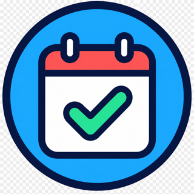
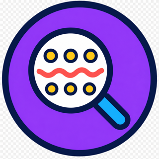
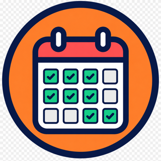
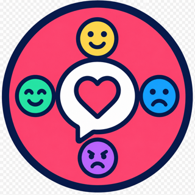
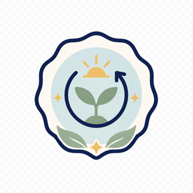
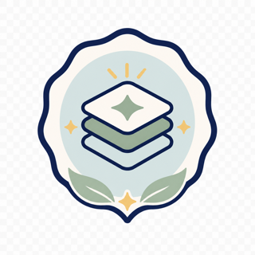
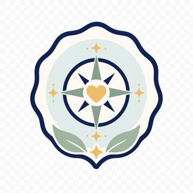
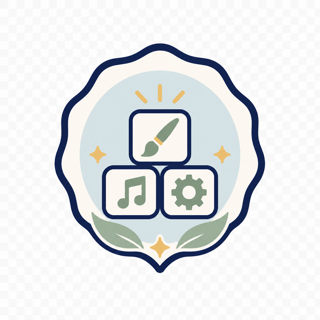

First Check-In
Choose what to work on next and keep building your skills.








This data is not therapeutic in nature. It is an assessment only and is not a diagnosis.
Choose a Skills category, connect it to what matters to you, or use the Daily Check-In if you're not sure.
Choose one value to use as an anchor for Focus, Cope, Feelings, and Connect.
Try the Daily Check-In. It will help you figure out what this moment requires and find a skill that fits.
Put one useful skill into practice.
Choose a Skills category or use the Daily Check-In to find a place to begin.
These are the tools you're learning how to use.
Build on the skills you're practicing.
When you're working on a skill, this section will prioritize related articles, Starter Camp, classes, or programs.
Get help applying what you're learning.
Work through what you're dealing with and identify a useful next step.
Learn and practice with other subscribers in the groups available to you.
Ask questions and get help applying the skills you're learning.
Keep useful ideas in reach between active practice sessions.
Read the latest practical guidance.
Listen to ideas you can use in real life.
See new skills, articles, and announcements.